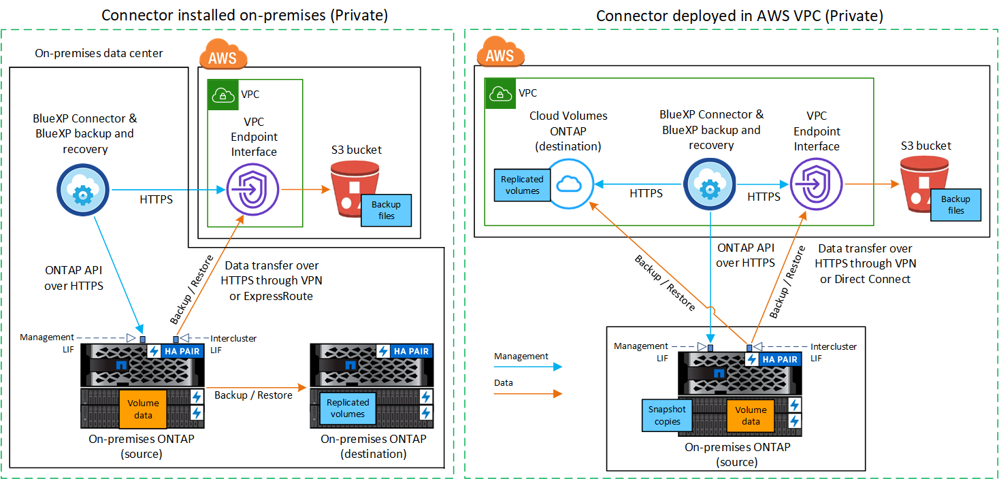

发行说明
发行说明
将内部 ONTAP 数据备份到 Amazon S3
 建议更改
建议更改
完成几个步骤即可开始将卷数据从内部ONTAP系统备份到二级存储系统和Amazon S3云存储。

|
"内部ONTAP系统"包括FAS、AFF和ONTAP Select系统。 |
快速入门
按照以下步骤快速入门。本主题的以下各节提供了每个步骤的详细信息。
 确定要使用的连接方法
确定要使用的连接方法选择是通过公有 Internet将内部ONTAP 集群直接连接到AWS S3、还是使用VPN或AWS Direct Connect并通过专用VPC端点接口将流量路由到AWS S3。
 准备您的BlueXP Connector
准备您的BlueXP Connector如果您已在AWS VPC或内部部署了Connector、则可以随时完成所有操作。如果没有、则需要创建BlueXP连接器、将ONTAP数据备份到AWS S3存储。您还需要自定义 Connector 的网络设置，以便它可以连接到 AWS S3 。
 验证许可证要求
验证许可证要求您需要查看AWS和BlueXP的许可证要求。
请参见 验证许可证要求。
 准备ONTAP集群
准备ONTAP集群在BlueXP中发现ONTAP集群、验证这些集群是否满足最低要求、并自定义网络设置、以便这些集群可以连接到AWS S3。
 准备Amazon S3作为备份目标
准备Amazon S3作为备份目标为Connector设置创建和管理S3存储分段的权限。您还需要为内部ONTAP 集群设置权限、以便其可以向S3存储分段读取和写入数据。
或者，您也可以为数据加密设置自己的自定义管理密钥，而不是使用默认的 Amazon S3 加密密钥。 了解如何让AWS S3环境做好接收ONTAP备份的准备。
 激活ONTAP卷上的备份
激活ONTAP卷上的备份选择工作环境、然后单击右侧面板中备份和恢复服务旁边的*启用>备份卷*。然后、按照设置向导选择要使用的复制和备份策略以及要备份的卷。
确定连接方法
选择在配置从内部ONTAP系统到AWS S3的备份时将使用以下两种连接方法中的哪一种。
-
公共连接-使用公共S3端点将ONTAP系统直接连接到AWS S3。
-
专用连接-使用VPN或AWS Direct Connect并通过使用专用IP地址的VPC端点接口路由流量。
或者、您也可以使用公共或专用连接连接到二级ONTAP系统以存储复制的卷。
下图显示了*公有 connection*方法以及组件之间需要准备的连接。您可以使用内部安装的Connector或AWS VPC中部署的Connector。

下图显示了*专用连接*方法以及组件之间需要准备的连接。您可以使用内部安装的Connector或AWS VPC中部署的Connector。

准备您的BlueXP Connector
BlueXP Connector是BlueXP功能的主要软件。需要使用连接器来备份和还原 ONTAP 数据。
创建或切换连接器
如果您已在AWS VPC或内部部署了Connector、则可以随时完成所有操作。
如果没有、则需要在其中一个位置创建一个连接器、将ONTAP数据备份到AWS S3存储。您不能使用部署在其他云提供商中的Connector。
-
如果连接器部署在云中、则GovCloud地区支持BlueXP备份和恢复、而不是安装在您的内部环境中。此外、您还必须从AWS Marketplace部署Connector。您不能从BlueXP SaaS网站在政府区域部署Connector。
准备连接器网络连接要求
确保满足以下网络连接要求：
-
确保安装 Connector 的网络启用以下连接：
-
通过端口443与BlueXP备份和恢复服务以及S3对象存储建立HTTPS连接 ("请参见端点列表"）
-
通过端口 443 与 ONTAP 集群管理 LIF 建立 HTTPS 连接
-
AWS和AWS GovCloud部署需要其他入站和出站安全组规则。请参见 "AWS 中连接器的规则" 了解详细信息。
-
-
如果从ONTAP 集群到VPC具有直接连接或VPN连接、并且您希望连接器和S3之间的通信保持在AWS内部网络中(*专用*连接)、则需要启用连接到S3的VPC端点接口。 请参见如何设置 VPC 端点接口。
验证许可证要求
您需要验证AWS和BlueXP的许可证要求：
-
在为集群激活BlueXP备份和恢复之前、您需要从AWS订阅按需购买(PAYGO) BlueXP Marketplace产品、或者从NetApp购买并激活BlueXP备份和恢复BYOL许可证。这些许可证适用于您的帐户，可在多个系统中使用。
-
对于BlueXP备份和恢复PAYGO许可、您需要订阅 "AWS Marketplace上的NetApp BlueXP产品"。BlueXP备份和恢复的计费通过此订阅完成。
-
对于BlueXP备份和恢复BYOL许可、您需要NetApp提供的序列号、以便在许可证有效期和容量内使用此服务。 "了解如何管理 BYOL 许可证"。
-
-
您需要为备份所在的对象存储空间订阅 AWS 。
支持的地区
您可以在所有地区创建从内部系统到 Amazon S3 的备份 "支持 Cloud Volumes ONTAP 的位置"；包括 AWS GovCloud 地区。您可以在设置服务时指定要存储备份的区域。
准备ONTAP集群
您需要准备源内部ONTAP系统和任何二级内部ONTAP或Cloud Volumes ONTAP系统。
准备ONTAP集群包括以下步骤：
-
在BlueXP中发现ONTAP系统
-
验证ONTAP系统要求
-
验证将数据备份到对象存储时的ONTAP网络要求
-
验证复制卷的ONTAP网络要求
在BlueXP中发现ONTAP系统
BlueXP Canvas上必须提供源内部ONTAP系统和任何二级内部ONTAP或Cloud Volumes ONTAP系统。
要添加集群，您需要知道集群管理 IP 地址和管理员用户帐户的密码。
"了解如何发现集群"。
验证ONTAP系统要求
确保满足以下ONTAP要求：
验证将数据备份到对象存储时的ONTAP网络要求
您必须在连接到对象存储的系统上配置以下要求。
-
对于扇出备份架构、请在_primar因_系统上配置以下设置。
-
对于级联备份架构、请在_Secondary _系统上配置以下设置。
需要满足以下ONTAP集群网络连接要求：
-
集群需要从 Connector 到集群管理 LIF 的入站 HTTPS 连接。
-
托管要备份的卷的每个 ONTAP 节点都需要一个集群间 LIF 。这些集群间 LIF 必须能够访问对象存储。
集群通过端口 443 从集群间 LIF 启动出站 HTTPS 连接到 Amazon S3 存储，以执行备份和还原操作。ONTAP 在对象存储中读取和写入数据—对象存储从不启动，它只是响应。
-
集群间 LIF 必须与 _IP 空间 _ 关联， ONTAP 应使用此 _IP 空间 _ 连接到对象存储。 "了解有关 IP 空间的更多信息"。
设置BlueXP备份和恢复时、系统会提示您使用IP空间。您应选择与这些 LIF 关联的 IP 空间。这可能是您创建的 " 默认 "IP 空间或自定义 IP 空间。
如果您使用的 IP 空间与 " 默认 " 不同，则可能需要创建静态路由才能访问对象存储。
IP空间中的所有集群间LIF都必须能够访问对象存储。如果无法为当前IP空间配置此空间、则需要创建一个专用IP空间、其中所有集群间LIF都可以访问对象存储。
-
必须已为卷所在的 Storage VM 配置 DNS 服务器。请参见操作说明 "为 SVM 配置 DNS 服务"。
-
如有必要、请更新防火墙规则、以允许通过端口443从ONTAP 到对象存储的BlueXP备份和恢复连接、以及通过端口53 (TCP/UDP)从Storage VM到DNS服务器的名称解析流量。
-
如果在AWS中使用专用VPC接口端点进行S3连接、则要使用HTTPS/443、您需要将S3端点证书加载到ONTAP 集群中。 请参见如何设置 VPC 端点接口并加载 S3 证书。
验证复制卷的ONTAP网络要求
如果您计划使用BlueXP备份和恢复在二级ONTAP系统上创建复制的卷、请确保源系统和目标系统满足以下网络连接要求。
内部ONTAP网络要求
-
如果集群位于您的内部环境中、则您应在企业网络与云提供商中的虚拟网络之间建立连接。这通常是一个 VPN 连接。
-
ONTAP 集群必须满足其他子网、端口、防火墙和集群要求。
由于您可以复制到Cloud Volumes ONTAP或内部系统、因此请查看内部ONTAP系统的对等要求。 "在 ONTAP 文档中查看集群对等的前提条件"。
Cloud Volumes ONTAP网络连接要求
-
实例的安全组必须包含所需的入站和出站规则：具体来说，是 ICMP 以及端口 11104 和 11105 的规则。这些规则包括在预定义的安全组中。
准备Amazon S3作为备份目标
准备Amazon S3作为备份目标包括以下步骤：
-
设置S3权限。
-
(可选)创建您自己的S3存储分段。(如果需要、服务将为您创建存储分段。)
-
(可选)设置客户管理的AWS密钥以进行数据加密。
-
(可选)使用VPC端点接口为系统配置专用连接。
设置 S3 权限
您需要配置两组权限：
-
Connector创建和管理S3存储分段的权限。
-
内部 ONTAP 集群的权限，以便可以将数据读写到 S3 存储分段。
-
确认以下 S3 权限（从最新版本开始） "BlueXP策略"）是为 Connector 提供权限的 IAM 角色的一部分。如果不是、请参见 "AWS 文档：编辑 IAM 策略"。
Details
{ "Sid": "backupPolicy", "Effect": "Allow", "Action": [ "s3:DeleteBucket", "s3:GetLifecycleConfiguration", "s3:PutLifecycleConfiguration", "s3:PutBucketTagging", "s3:ListBucketVersions", "s3:GetObject", "s3:DeleteObject", "s3:PutObject", "s3:ListBucket", "s3:ListAllMyBuckets", "s3:GetBucketTagging", "s3:GetBucketLocation", "s3:GetBucketPolicyStatus", "s3:GetBucketPublicAccessBlock", "s3:GetBucketAcl", "s3:GetBucketPolicy", "s3:PutBucketPolicy", "s3:PutBucketOwnershipControls", "s3:PutBucketPublicAccessBlock", "s3:PutEncryptionConfiguration", "s3:GetObjectVersionTagging", "s3:GetBucketObjectLockConfiguration", "s3:GetObjectVersionAcl", "s3:PutObjectTagging", "s3:DeleteObjectTagging", "s3:GetObjectRetention", "s3:DeleteObjectVersionTagging", "s3:PutBucketObjectLockConfiguration", "s3:DeleteObjectVersion", "s3:GetObjectTagging", "s3:PutBucketVersioning", "s3:PutObjectVersionTagging", "s3:GetBucketVersioning", "s3:BypassGovernanceRetention", "s3:PutObjectRetention", "s3:GetObjectVersion", "athena:StartQueryExecution", "athena:GetQueryResults", "athena:GetQueryExecution", "glue:GetDatabase", "glue:GetTable", "glue:CreateTable", "glue:CreateDatabase", "glue:GetPartitions", "glue:BatchCreatePartition", "glue:BatchDeletePartition" ], "Resource": [ "arn:aws:s3:::netapp-backup-*" ] }
在AWS中国地区创建备份时、您需要将IAM策略中所有_Resource_部分下的AWS资源名称"arn"从"aws"更改为"AAWS CN"；例如 arn:aws-cn:s3:::netapp-backup-*。 -
激活此服务后、备份向导将提示您输入访问密钥和机密密钥。这些凭据将传递到 ONTAP 集群，以便 ONTAP 可以将数据备份和还原到 S3 存储分段。为此，您需要创建具有以下权限的 IAM 用户。
Details
{ "Version": "2012-10-17", "Statement": [ { "Action": [ "s3:GetObject", "s3:PutObject", "s3:DeleteObject", "s3:ListBucket", "s3:ListAllMyBuckets", "s3:GetBucketLocation", "s3:PutEncryptionConfiguration" ], "Resource": "arn:aws:s3:::netapp-backup-*", "Effect": "Allow", "Sid": "backupPolicy" }, { "Action": [ "s3:ListBucket", "s3:GetBucketLocation" ], "Resource": "arn:aws:s3:::netapp-backup*", "Effect": "Allow" }, { "Action": [ "s3:GetObject", "s3:PutObject", "s3:DeleteObject", "s3:ListAllMyBuckets", "s3:PutObjectTagging", "s3:GetObjectTagging", "s3:RestoreObject", "s3:GetBucketObjectLockConfiguration", "s3:GetObjectRetention", "s3:PutBucketObjectLockConfiguration", "s3:PutObjectRetention" ], "Resource": "arn:aws:s3:::netapp-backup*/*", "Effect": "Allow" } ] }
创建您自己的存储分段
默认情况下、该服务会为您创建存储分段。或者、如果要使用自己的存储分段、您可以在启动备份激活向导之前创建这些存储分段、然后在向导中选择这些存储分段。
如果您创建自己的存储分段、则应使用存储分段名称"NetApp-backup"。如果需要使用自定义名称、请编辑 ontapcloud-instance-policy-netapp-backup IAMRole、并将以下列表添加到S3权限中。您需要包括 “Resource”: “arn:aws:s3:::*” 并分配需要与存储分段关联的所有必要权限。
Details
"操作"：[
"S3：ListBucket"
"S3：GetBucketLocation"
]
"Resource (资源)"："ARN：AWS：S3：：：："、
"影响"："允许"
｝、
｛
"操作"：[
"S3：GetObject"、
"S3：PutObject"、
"S3：DeleteObject"、
"S3：ListAllMyBucbes"、
"S3：PutObjectTaging"、
"S3：GetObjectTaging"、
"S3：Restore"、
"S3：GetBucketObjectLockConfiguration "、
"S3：GetObject保留"、
"S3：PutBucketObjectLockConfiguration "、
"S3：PutObject保留"
]
"Resource (资源)"："ARN：AWS：S3：：：："、
设置客户管理的AWS密钥以进行数据加密
如果您要使用默认Amazon S3加密密钥对内部集群和S3存储分段之间传递的数据进行加密、则会进行全部设置、因为默认安装会使用此类型的加密。
如果您要使用自己的客户管理密钥进行数据加密、而不是使用默认密钥、则需要在启动BlueXP备份和恢复向导之前先设置加密管理密钥。 "请参阅如何使用您自己的密钥"。
使用VPC端点接口为系统配置专用连接
如果您要使用标准公有 Internet连接、则所有权限均由Connector设置、无需执行任何其他操作。此类型的连接如中所示 "第一个图"。
如果您希望通过Internet从内部数据中心到VPC建立更安全的连接、可以在备份激活向导中选择AWS PrivateLink连接。如果您计划使用VPN或AWS Direct Connect通过使用专用IP地址的VPC端点接口连接内部系统、则必须使用此功能。此类型的连接如中所示 "第二个图"。
-
使用 Amazon VPC 控制台或命令行创建接口端点配置。 "请参见有关使用适用于Amazon S3的AWS PrivateLink的详细信息"。
-
修改与BlueXP Connector关联的安全组配置。您必须将此策略更改为 "Custom" （自定义）（从 "Full Access" ），并且必须将其更改为 "Custom" （自定义） 从备份策略添加 S3 权限 如前面所示。

如果您使用端口80 (HTTP)与专用端点进行通信、则已设置完毕。您现在可以在集群上启用BlueXP备份和恢复。
如果您使用端口443 (HTTPS)与专用端点进行通信、则必须从VPC S3端点复制证书并将其添加到ONTAP 集群中、如接下来的4个步骤所示。
-
从 AWS 控制台获取端点的 DNS 名称。

-
从 VPC S3 端点获取证书。您可以通过执行此操作 "登录到托管BlueXP Connector的虚拟机" 并运行以下命令。输入端点的 DNS 名称时，在开头添加 " 分段 " ，替换 "* " ：
[ec2-user@ip-10-160-4-68 ~]$ openssl s_client -connect bucket.vpce-0ff5c15df7e00fbab-yxs7lt8v.s3.us-west-2.vpce.amazonaws.com:443 -showcerts -
从此命令的输出中，复制 S3 证书的数据（包括开始 / 结束证书标记之间的所有数据）：
Certificate chain 0 s:/CN=s3.us-west-2.amazonaws.com` i:/C=US/O=Amazon/OU=Server CA 1B/CN=Amazon -----BEGIN CERTIFICATE----- MIIM6zCCC9OgAwIBAgIQA7MGJ4FaDBR8uL0KR3oltTANBgkqhkiG9w0BAQsFADBG … … GqvbOz/oO2NWLLFCqI+xmkLcMiPrZy+/6Af+HH2mLCM4EsI2b+IpBmPkriWnnxo= -----END CERTIFICATE----- -
登录到 ONTAP 集群命令行界面并使用以下命令应用您复制的证书（替换您自己的 Storage VM 名称）：
cluster1::> security certificate install -vserver cluster1 -type server-ca Please enter Certificate: Press <Enter> when done
激活ONTAP卷上的备份
随时直接从内部工作环境激活备份。
向导将引导您完成以下主要步骤：
您也可以 显示API命令 在审核步骤中、这样您就可以复制代码、以便为未来的工作环境自动激活备份。
启动向导
-
使用以下方式之一访问激活备份和恢复向导：
-
从BlueXP画布中、选择工作环境、然后在右侧面板中的备份和恢复服务旁边选择*启用>备份卷*。
如果Canvas上存在用于备份的Amazon S3目标作为工作环境、则可以将ONTAP集群拖动到Amazon S3对象存储上。
-
在备份和恢复栏中选择*卷*。从卷选项卡中，选择*操作*
 图标并为单个卷(尚未启用复制或备份到对象存储)选择*激活备份*。
图标并为单个卷(尚未启用复制或备份到对象存储)选择*激活备份*。
向导的"简介"页面显示了保护选项、包括本地Snapshot、复制和备份。如果您执行了此步骤中的第二个选项、则会显示Define Backup Strategy"页面、并选择一个卷。
-
-
继续执行以下选项：
-
如果您已经拥有BlueXP Connector、则一切都已准备就绪。只需选择*下一步*。
-
如果您还没有BlueXP Connector，将显示*Add a Connecter*选项。请参见 准备您的BlueXP Connector。
-
选择要备份的卷
选择要保护的卷。受保护卷是指具有以下一项或多项内容的卷：Snapshot策略、复制策略、备份到对象策略。
您可以选择保护FlexVol或FlexGroup卷；但是、在为工作环境激活备份时、不能混合选择这些卷。请参见操作说明 "为工作环境中的其他卷激活备份" (FlexVol或FlexGroup)。
|
|
|
请注意、如果您选择的卷已应用Snapshot或复制策略、则您稍后选择的策略将覆盖这些现有策略。
-
在选择卷页面中、选择要保护的一个或多个卷。
-
(可选)筛选行以仅显示具有特定卷类型、样式等的卷、以便于选择。
-
选择第一个卷后、您可以选择所有FlexVol卷(一次只能选择一个FlexGroup卷)。要备份所有现有FlexVol卷、请先选中一个卷、然后选中标题行中的框。（
 ）。
）。 -
要备份单个卷，请选中每个卷对应的框（
 ）。
）。
-
-
选择 * 下一步 * 。
定义备份策略
定义备份策略包括设置以下选项：
-
是需要一个还是所有备份选项：本地快照、复制和备份到对象存储
-
架构
-
本地Snapshot策略
-
复制目标和策略
如果您选择的卷具有与此步骤中选择的策略不同的Snapshot和复制策略、则现有策略将被覆盖。 -
备份到对象存储信息(提供程序、加密、网络连接、备份策略和导出选项)。
-
在"Define backup stry"页面中、选择以下一项或全部。默认情况下、所有这三个选项均处于选中状态：
-
本地快照：如果要执行复制或备份到对象存储、则必须创建本地快照。
-
复制：在另一个ONTAP存储系统上创建复制的卷。
-
Backup：将卷备份到对象存储。
-
-
*Architecture *：如果选择复制和备份，请选择以下信息流之一：
-
级联：信息从主存储流向二级存储、从二级存储流向对象存储。
-
扇出：从主存储到二级存储的信息从主存储到对象存储。
有关这些架构的详细信息、请参见 "规划您的保护之旅"。
-
-
本地Snap照：选择现有Snapshot策略或创建策略。

要在激活Snapshot之前创建自定义策略、请参见 "创建策略"。 要创建策略，请选择*创建新策略*并执行以下操作：
-
输入策略的名称。
-
最多可选择5个计划、通常频率不同。
-
选择 * 创建 * 。
-
-
*Replication *：设置以下选项：
-
复制目标：选择目标工作环境和SVM。或者、选择要添加到复制的卷名称中的一个或多个目标聚合以及前缀或后缀。
-
复制策略：选择现有复制策略或创建策略。
要在激活复制之前创建自定义策略、请参见 "创建策略"。 要创建策略，请选择*创建新策略*并执行以下操作：
-
输入策略的名称。
-
最多可选择5个计划、通常频率不同。
-
选择 * 创建 * 。
-
-
-
备份到对象：如果选择了*Backup*，请设置以下选项：
-
提供商：选择*Amazon Web Services*。
-
提供程序设置：输入提供程序详细信息和要存储备份的AWS区域。
访问密钥和机密密钥适用于您创建的 IAM 用户，用于为 ONTAP 集群授予对 S3 存储分段的访问权限。
-
存储分段：选择现有S3存储分段或创建新存储分段。请参见 "添加S3存储分段"。
-
加密密钥：如果创建了新的S3存储分段，请输入提供程序提供给您的加密密钥信息。选择是使用默认Amazon S3加密密钥、还是从AWS帐户中选择自己的客户管理密钥来管理数据加密。
如果您选择了现有存储分段、则加密信息已可用、因此现在无需输入。 -
联网：选择IP空间，以及是否使用专用端点。默认情况下、专用端点处于禁用状态。
-
要备份的卷所在的 ONTAP 集群中的 IP 空间。此 IP 空间的集群间 LIF 必须具有出站 Internet 访问权限。
-
或者，选择是否使用先前配置的 AWS PrivateLink 。 "请参见有关使用适用于 Amazon S3 的 AWS PrivateLink 的详细信息"。
-
-
备份策略：选择现有备份策略或创建策略。
要在激活备份之前创建自定义策略、请参见 "创建策略"。 要创建策略，请选择*创建新策略*并执行以下操作：
-
输入策略的名称。
-
最多可选择5个计划、通常频率不同。
-
选择 * 创建 * 。
-
-
将现有Snapshot副本作为备份副本导出到对象存储：如果此工作环境中的卷具有与您刚刚为此工作环境选择的备份计划标签(例如每日、每周等)匹配的任何本地Snapshot副本、则会显示此附加提示。选中此框可将所有历史Snapshot作为备份文件复制到对象存储、以确保对卷进行最全面的保护。
-
-
选择 * 下一步 * 。
查看您的选择
您可以借此机会查看所做的选择、并在必要时进行调整。
-
在Review页面中、查看所做的选择。
-
(可选)选中*自动将Snapshot策略标签与复制和备份策略标签同步*复选框。此操作将创建具有与复制和备份策略中的标签匹配的标签的Snapshot。
-
选择*激活备份*。
BlueXP备份和恢复开始对卷进行初始备份。复制的卷和备份文件的基线传输包括主存储系统数据的完整副本。后续传输会包含Snapshot副本中所含主数据的差异副本。
此时将在目标集群中创建一个复制的卷、该卷将与主存储卷同步。
此时将在您输入的S3访问密钥和机密密钥所指示的服务帐户中创建S3存储分段、并将备份文件存储在该帐户中。此时将显示卷备份信息板，以便您可以监控备份的状态。
您还可以使用监控备份和还原作业的状态 "作业监控面板"。
显示API命令
您可能希望显示并(可选)复制激活备份和恢复向导中使用的API命令。您可能希望执行此操作、以便在未来工作环境中自动激活备份。
-
从激活备份和恢复向导中，选择*View API Request*。
-
要将命令复制到剪贴板，请选择*复制*图标。
下一步是什么？
-
您可以 "管理备份文件和备份策略"。其中包括启动和停止备份、删除备份、添加和更改备份计划等。
-
您可以 "管理集群级别的备份设置"。其中包括更改ONTAP 用于访问云存储的存储密钥、更改可用于将备份上传到对象存储的网络带宽、更改未来卷的自动备份设置等。
-
您也可以 "从备份文件还原卷、文件夹或单个文件" 连接到 AWS 中的 Cloud Volumes ONTAP 系统或内部 ONTAP 系统。